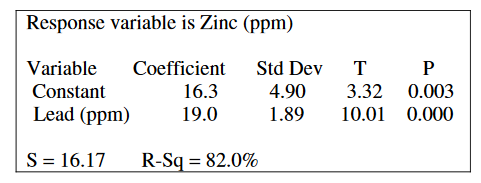

The computer output below shows the result of a linear regression analysis for predicting the concentration of zinc, in parts per million (ppm), from the concentration of lead, in ppm, found in fish from a certain river.

Which of the following statements is a correct interpretation of the value 19.0 in the output?